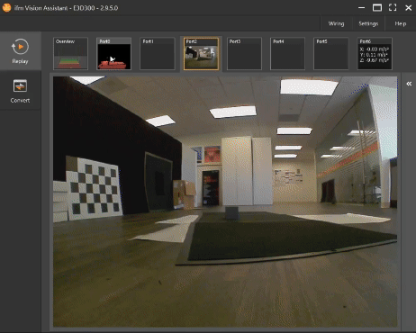
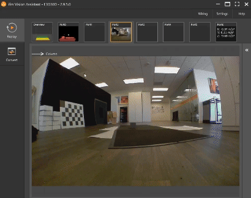

Dust
Dust can cause several issues or artifacts in Time-of-Flight cameras, as these cameras rely on precise infrared light reflections to measure distance and generate depth maps. Dust particles in the air can scatter the emitted IR light from the ToF camera. Instead of the light reaching the intended object and reflecting back to the sensor, some of it reflects off dust particles. This scattering results in incorrect depth measurements.
Dust close to the camera can create false depth readings because the camera detects the reflection from the dust particles instead of the target object. These false readings make it seem as though there are objects closer to the camera than there actually are. When dust scatters the emitted IR light, less of it reaches the object, which can reduce the signal-to-noise ratio. This results in noisier or less reliable depth maps, particularly in areas with low reflectivity or long-range measurements.
Dust can cause “ghosting” artifacts in the depth image, where the camera picks up multiple reflections from the particles, leading to inaccurate depth data. This can result in blurry or distorted representations of the actual scene.
Dust settling on the camera lens or IR emitter/sensor can also degrade the image quality by blocking part of the emitted or reflected light. This may lead to uneven or partial data capture, affecting the overall reliability of the depth map. ToF cameras used in environments with a lot of airborne particles, such as factories, construction sites, or outdoor areas during dry conditions, are more susceptible to these issues. Fine dust particles are especially problematic because they are easily scattered by IR light and are harder to detect or filter out by the camera’s internal algorithms. Dust closer to the camera’s sensor has a greater impact because the camera interprets it as being part of the scene, leading to incorrect depth calculations.
There are solutions to mitigate dust issues:
Minimizing dust in the environment where the ToF camera is used, such as using air filters, enclosures, or keeping the camera in a clean space, can greatly reduce dust-related artifacts. We generally recommend to clean the lenses and emitters regularly to help maintain the accuracy of depth measurements.
In addition to that, ifm has implemented filtering algorithms to detect and compensate for noise caused by dust particles. These algorithms can differentiate between short-range reflections from dust and actual objects based on intensity, consistency, or signal quality. Typically all reflections from dust are flagged in the depth map avoiding false distance measurements.
The video below demonstrates the impact of dust on the depth map and ODS, where object detection reliability is reduced. A substantial amount of dust was introduced from above, in close proximity to the camera, for several seconds while ODS attempted to detect a gray 10x10 cm cube positioned 1.7 m away. The dust was detected and flagged, affecting pixels facing the object. Although the dust particles are small, their slow fall cause a larger area of pixels to be impacted. For comparison, the same scene was recorded without dust. Disclaimer: The presented scene is not a real-world scenario. It is an intentionally fabricated setup designed to provoke the artifact described in this section for demonstration purposes, with the goal of illustrating a worst-case scenario
 |
 |
As you can see, all artifacts caused by dust are flagged. Mitigation strategies for unreliable object detection have been mentioned above. Dust can also cause false positive detection in ODS. If you experience something like that, ifm provides a solution for it. For more information about this, see Dust mitigation.